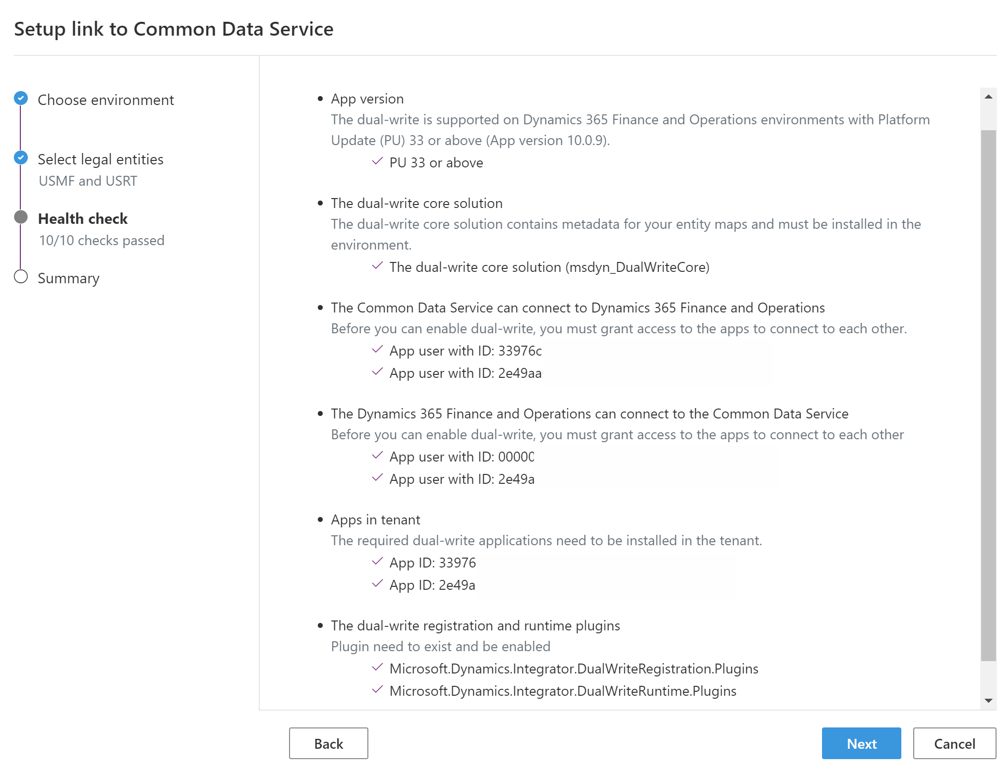
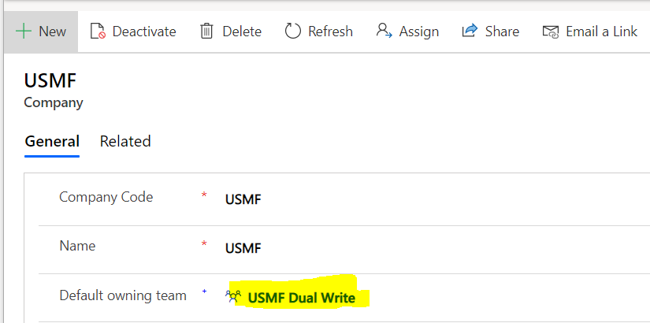

Probleme bei der anfänglichen Einrichtung behandeln
[!include[banner](../../includes/banner.md)][!include[rename-banner](~/includes/cc-data-platform-banner.md)]Dieses Thema enthält Problembehandlungsinformationen zur dualen Schreibintegration zwischen den Apps Finance and Operations und Dataverse. Dieses Thema enthält insbesondere Informationen zur Fehlerbehebung, mit denen Sie Probleme beheben können, die mit der initialen Einrichtung der Integration vom dualen Schreiben zusammenhängen.
Important
Einige der in diesem Thema behandelten Probleme erfordern möglicherweise entweder die Systemadministratorrolle oder Microsoft Azure Active Directory (Azure AD) Anmeldeinformationen des Mandantenadministrators. Im Abschnitt zu jedem Problem wird erläutert, ob eine bestimmte Rolle oder Anmeldeinformationen erforderlich sind.
Sie können eine Finance and Operations App nicht mit Dataverse verknüpfen
Erforderliche Rolle zur Einrichtung von dualem Schreiben: Systemadministrator in Finance and Operations-Apps und Dataverse.
Fehler auf der Seite Einrichtungs-Link für Dataverse werden normalerweise durch unvollständige Setup- oder Berechtigungsprobleme verursacht. Stellen Sie sicher, dass die gesamte Integritätsprüfung die Seite Einrichtungs-Link zu Dataverse wie in der folgenden Abbildung gezeigt. Sie können Duales Schreiben nur verknüpfen, wenn die gesamte Integritätsprüfung bestanden wurde.

Sie müssen Azure AD Mandantenadministrator-Anmeldeinformationen haben, um Finance and Operations und Dataverse Umgebungen zu verknüpfen. Nachdem Sie die Umgebungen verknüpft haben, können sich Benutzer mit ihren Kontoanmeldeinformationen anmelden und eine vorhandene Tabellenzuordnung aktualisieren.
Fehler beim Öffnen des Links zur Seite Dataverse
Erforderliche Anmeldeinformationen zum Lösen des Problems: Azure AD Mandant Admin
Möglicherweise wird die folgende Fehlermeldung angezeigt, wenn Sie den Link zur Dataverse Seite in einer Finance and Operations App öfnen:
Der Antwortstatuscode zeigt keinen Erfolg an: 404 (Nicht gefunden).
Dieser Fehler tritt auf, wenn der Zustimmungsschritt nicht abgeschlossen wurde. Melden Sie sich bei Portal.Azure.com an, um zu überprüfen, ob der Zustimmungsschritt abgeschlossen wurde mithilfe dem Azure AD Mandantenadministratorkonto, und prüfen Sie, ob die Drittanbieter-App die über die ID verfügt 33976c19-1db5-4c02-810e-c243db79efde in der Azure AD Unternehmensanwendungen angezeigt wird. Wenn dies nicht der Fall ist, müssen Sie die Zustimmung der App geben.
Führen Sie die folgenden Schritte aus, um die App-Zustimmung zu erteilen.
Öffnen Sie die folgende URL mithilfe Ihrer Administratoranmeldeinformationen. Sie sollten zur Zustimmung aufgefordert werden.
Wählen Akzeptieren, um anzugeben, dass Sie Ihre Zustimmung zur Installation der App mit der ID 33976c19-1db5-4c02-810e-c243db79efde in Ihrem Mandant geben.
Tip
Diese App muss verlinkt werden mit Dataverse und Finance and Operations Apps. Wenn Sie Probleme mit diesem Schritt haben, öffnen Sie Ihren Browser im Inkognito-Modus (in Google Chrome) oder im InPrivate-Modus (in Microsoft Edge).
Stellen Sie sicher, dass Unternehmensdaten und Teams Duales Schreiben während der Verknüpfung korrekt eingerichtet sind
Um sicherzustellen, dass Duales Schreiben ordnungsgemäß funktioniert, werden die Unternehmen, die Sie während der Konfiguration auswählen, in der Liste Dataverse Umgebung erstellt. Standardmäßig sind diese Unternehmen schreibgeschützt und die IsDualWriteEnable Eigenschaft ist auf Wahr festgelegt. Darüber hinaus werden der Eigentümer und das Team der Geschäftseinheit mit Standardbesitz erstellt und enthalten den Firmennamen. Stellen Sie vor dem Aktivieren der Karten sicher, dass der Standardteambesitzer angegeben ist. Um Unternehmen (CDM_Unternehmen) Entität zu finden, folgen Sie diesen Schritten.
Wählen Sie in der modellgesteuerten App in Dynamics 365 den Filter in der oberen rechten Ecke aus.
Wählen Sie in der Dropdownliste Unternehmen aus.
Wählen Ausführen, um die Ergebnisse zu sehen.
Wählen Sie die Firma aus, die bei der Konfiguration von Dualem Schreiben verknüpft war.
Stellen Sie sicher, dass das Feld Standardbesitzerteam einen Wert hat. In der folgenden Abbildung ist das Feld Standardbesitzerteam auf USMF – Duales Schreiben festgelegt.

Finden Sie das Limit für die Anzahl der juristischen Tabellen oder Unternehmen, die für duales Schreiben verknüpft werden können
Möglicherweise wird die folgende Fehlermeldung angezeigt, wenn Sie versuchen, die Zuordnung zu aktivieren:
Dualer Schreibfehler – Plugin-Registrierung fehlgeschlagen: [(Partitionszuordnung für Projekt DWM kann nicht abgerufen werden-1ae35e60-4bc2-4905-88ea-69efd3b29260–7f12cb89-1550-42e2-858e-4761fc1443ea . Fehler überschreitet die maximal zulässigen Partitionen für die Zuordnung von DWM-1ae35e60-4bc2-4905-88ea-69efd3b29260–7f12cb89-1550-42e2-858e-4761fc1443ea)]Ein oder mehrere Fehler sind aufgetreten.
Die aktuelle Limite beim Verknüpfen der Umgebungen beträgt ungefähr 40 juristische Tabellen. Dieser Fehler tritt auf, wenn Sie versuchen, Karten zu aktivieren, und mehr als 40 juristische Tabellen zwischen den Umgebungen verknüpft sind.